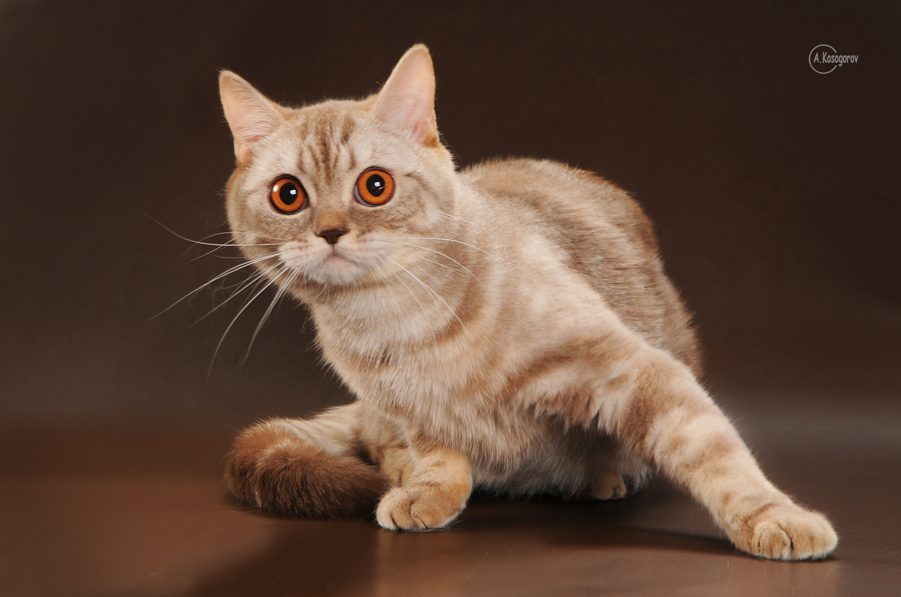

Контентные изображения
Слово контент происходит от английского слова «content» — содержимое. С помощью таких изображений мы можем донести до пользователей полезную информацию. Чтобы добавить контентное изображение к себе на страницу, используйте в разметке " < img >". Для изображений такого типа необходимо заполнять атрибут alt, который описывает то, что изображено на картинке.


Для оптимизации изображений можно использовать специальный сервис для оптимизации изображений jpg, png, ... в webp Наподобие squoosh.app
Примеры изображения форматированного в webp и оптимизированного сервисом - приведены ниже.
- 
Оригинальное изображение весом 4мб

Оптимизированное изображение весом 441кб